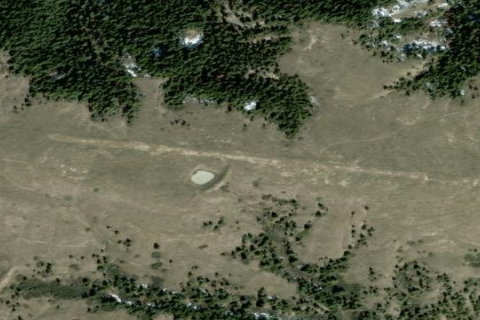

BLACK BUTTE NORTH, MT
MT

Aerial imagery source: Esri, Vantor, Earthstar Geographics, and the GIS User Community
| State | MT |
|---|---|
| CTAF | 122.9 |
| Coordinates | 47.84542, -109.18656 |
Notes
[shortfield] Location Overview Black Butte North Airstrip is located 18 miles northeast of Winifred, Montana, at an elevation of 3,150 feet MSL. This private-use airstrip serves as one of six charted airstrips providing access to the Upper Missouri River Breaks National Monument, a half-million-acre landscape that remains largely unchanged since Lewis and Clark first explored the region in 1805. Camping & Recreation The airstrip offers primitive dry camping and serves as a gateway for hiking and exploration within the scenic Breaks country. Each June, the community hosts the Missouri River Breaks Fly-in, a weekend event that begins with a Friday kickoff dinner and campout at the Winifred airport, followed by Saturday exploration flights to the various Breaks airstrips. The area is ideal for backcountry aviation enthusiasts seeking remote wilderness access and scenic beauty. Notes & Warnings Pilots should be aware that the runway becomes soft and muddy when wet, maintenance is irregular, and there is no snow removal. Wildlife and cattle roam both on and around the airstrip. No fuel is available on-site. This is strictly a backcountry strip requiring preparation and proper aircraft selection—tailwheel-equipped bushplanes are recommended. History Black Butte North and five other airstrips predate the 2001 declaration creating the Upper Missouri Breaks National Monument. When the monument designation threatened closure of all roads and airstrips, aviation advocates worked to preserve these historic strips, with supporters attending public meetings and conducting research to document their significance. Today, these charted airstrips remain cherished access points for pilots seeking to explore one of America's most remote and pristine landscapes.